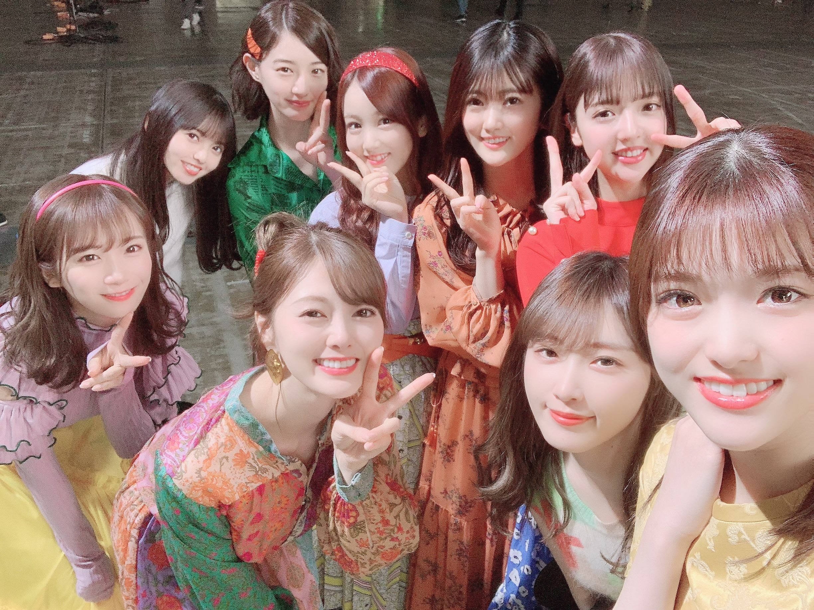

2020/1103Tue悲しくなった時は思い出してほしいっ(o・・o)
松村沙友理です
10月は私の大好きな人が二人も卒業した月でした
寂しいけど
有り難くも忙しくさせて頂いているので
あまり考えないで済んでいる気がします
また会えると思っても
やっぱり乃木坂46での姿を見れなくなるのは寂しいし
つらいです
昔は 誰かが卒業するたびに
前向きな卒業だから！と
明るく送り出していましたが
何年か前から
それも辞めてしまいました
だって本当は寂しいし卒業してほしくないから
寂しい時は寂しいと言うと心に決めました。
後悔しないように
二人を送り出して
自分がどういう気持ちでいるのか
自分でもわかりません
でも こうやって向き合って文章にしていると
涙が溢れてきます
寂しいのかな？
そりゃあ 寂しいですよね
私は本当にラッキーなことに
二人に想いを伝える場をもらえました
あの場をくれた沢山の方に感謝いたします。
本当にありがとうございました。
かなちゃんの写真集も
まいやんのメモリアルマガジンも
今は私の支えです。
大好きな二人のとっても綺麗な姿
かなちゃんとまいやんの未来を
みなさんと一緒に応援します！！
大好きだよーとこれからも伝えよう！！
かなちゃんまいやん
本当にお疲れさまでした！！

2020/11/03 13:48
コメント(941)
さゆりちゃん…僕も悲しいです。
乃木坂のライブ映像を見る度にもぅこの曲もこの曲もセンターにまいやんはいないんだ、、と強く感じています。
寂しいし悲しいし辛いけど、いつかはやってくる1期生の卒業。
例えばさゆりんやいくちゃんが卒業発表した時に後悔しないように
今はただ変わらずに乃木坂46の応援を続ける。
それこそが今やるべき正しいことだと思うので変わらずにさゆりちゃんを応援しいます！
さゆりちゃんの笑顔が大好きです。さゆりんごなら大丈夫
体調に気をつけてお仕事頑張ってね♡
愛知の22歳のゆうたより
乃木坂のライブ映像を見る度にもぅこの曲もこの曲もセンターにまいやんはいないんだ、、と強く感じています。
寂しいし悲しいし辛いけど、いつかはやってくる1期生の卒業。
例えばさゆりんやいくちゃんが卒業発表した時に後悔しないように
今はただ変わらずに乃木坂46の応援を続ける。
それこそが今やるべき正しいことだと思うので変わらずにさゆりちゃんを応援しいます！
さゆりちゃんの笑顔が大好きです。さゆりんごなら大丈夫
体調に気をつけてお仕事頑張ってね♡
愛知の22歳のゆうたより
松村さん悲しみを、乗り越えて頑張ってください‼️応援します‼️
生ドルコンビもさゆまいも大好きでした。
とてもさみしいです。
沙友理ちゃんのことがとても心配です。
文章にしてくれてありがとう。
大好きだよ〜！
とてもさみしいです。
沙友理ちゃんのことがとても心配です。
文章にしてくれてありがとう。
大好きだよ〜！
ブログ更新ありがとうございます⸜☺︎⸝
まいやんとかなりんへのお手紙感動しました。
さゆりんの2人への思いを聞いていたら自然と涙が出てきて止められなくなってしまいました。
まいやんの卒コンでの「流星ディスコティック」。
改めて素敵な関係性だなって感じました。
これから先もずっとさゆまいが大好きです❤︎
まいやんとかなりんへのお手紙感動しました。
さゆりんの2人への思いを聞いていたら自然と涙が出てきて止められなくなってしまいました。
まいやんの卒コンでの「流星ディスコティック」。
改めて素敵な関係性だなって感じました。
これから先もずっとさゆまいが大好きです❤︎
まちゅブログ更新ありがとう！
悲しいですよね。いちばん近くにいたまちゅが1番悲しさが大きいと思います。プライベートで沢山遊んでください！いつか共演してテレビの前で見れる日を楽しみにしてます！
悲しいですよね。いちばん近くにいたまちゅが1番悲しさが大きいと思います。プライベートで沢山遊んでください！いつか共演してテレビの前で見れる日を楽しみにしてます！
さゆりんが素直に寂しいって言ったり、泣いてる姿を見て
いつももらい泣きしてしまいます。
ファンなんかよりそりゃ寂しいよなと気付かされます。
さゆりんが辛いとき、苦しいときはファンも支えるからね^ ^
まちゅ頑張れるよ。いつも頑張ってきたんだから。
いつももらい泣きしてしまいます。
ファンなんかよりそりゃ寂しいよなと気付かされます。
さゆりんが辛いとき、苦しいときはファンも支えるからね^ ^
まちゅ頑張れるよ。いつも頑張ってきたんだから。
さゆりんーーー(;_;)(;_;)(;_;)(;_;)(;_;)
寂しいよね。悲しいよね。でも歩かないとだね。
寂しいよね。悲しいよね。でも歩かないとだね。
まっちゅん、もっともっと沢山強くなるのだよ〜
ファイト〜
ファイト〜
ブログ更新ありがとう!!
誰かが卒業する度に悲しさとか複雑な感情が抑えられないよね(><)
さゆりん卒業したら絶対号泣しちゃうもん
卒コンの手紙読むシーンでさゆりんの優しさがめちゃめちゃ溢れててこっちまで感動してきちゃった!!
ずっとずっと応援してます！
頑張ってください!!
誰かが卒業する度に悲しさとか複雑な感情が抑えられないよね(><)
さゆりん卒業したら絶対号泣しちゃうもん
卒コンの手紙読むシーンでさゆりんの優しさがめちゃめちゃ溢れててこっちまで感動してきちゃった!!
ずっとずっと応援してます！
頑張ってください!!
寂しいよね。
ファンである自分ももう乃木坂のまいやんとかなりんを見れないし、握手会で会えることもない。辛い。。
でも特に一期生が未来の話を楽しそうにしているのを見てると不思議と自分まで幸せになるんだよね！
みんなの未来は絶対に明るい！もちろんまちゅの未来も！
そして乃木坂でいてくれてるまちゅには感謝感謝です。
いつもありがとう！そしてこれからもよろしく！
まちゅなら大丈夫！！乃木坂なら大丈夫！！
大好きだぁーーー！！！！！
ファンである自分ももう乃木坂のまいやんとかなりんを見れないし、握手会で会えることもない。辛い。。
でも特に一期生が未来の話を楽しそうにしているのを見てると不思議と自分まで幸せになるんだよね！
みんなの未来は絶対に明るい！もちろんまちゅの未来も！
そして乃木坂でいてくれてるまちゅには感謝感謝です。
いつもありがとう！そしてこれからもよろしく！
まちゅなら大丈夫！！乃木坂なら大丈夫！！
大好きだぁーーー！！！！！
まちゅ〜これからもずっと応援してるよ！
ブログ更新ありがとう！
さゆりんの思いが2人にも届いているから、これからもさゆりんらしく頑張ってね！
これからも応援しています！！
さゆりんの思いが2人にも届いているから、これからもさゆりんらしく頑張ってね！
これからも応援しています！！
まちゅがコンサートで読んでくれた手紙、あれが全てだと思います！
人間は、どうやらなかなかサヨナラには強くなれないみたいです。
でも、最近は過去のライブ映像を見て楽しめている自分がいます。
少しは、サヨナラにも強くなれたのかな、なんてしみじみ感じています(*˘꒳˘*)
僕達にできることは、乃木坂ちゃんがアイドルでいる今を全力で応援し、その時を一緒に楽しむことだと思っています！
後から、ないものねだりをしなくてもいいように、たーくさん応援しますね！
まちゅも、体調には気をつけてお過ごしください
次のブログ更新も、待ってます
人間は、どうやらなかなかサヨナラには強くなれないみたいです。
でも、最近は過去のライブ映像を見て楽しめている自分がいます。
少しは、サヨナラにも強くなれたのかな、なんてしみじみ感じています(*˘꒳˘*)
僕達にできることは、乃木坂ちゃんがアイドルでいる今を全力で応援し、その時を一緒に楽しむことだと思っています！
後から、ないものねだりをしなくてもいいように、たーくさん応援しますね！
まちゅも、体調には気をつけてお過ごしください
次のブログ更新も、待ってます
まちゅブログありがとう！！
卒コンでのまちゅの手紙でたくさん泣いてしまいました。。
まちゅと同じようにまいやんとかなりんの乃木坂46での姿をもう見ることができないんだなと思うと寂しくて仕方ありません。
でもまだ乃木坂46として活動してくれている1期生たちがいるし、残された時間も短いんだろうな、、、と思うと1秒1秒を大切にみんなが乃木坂として活動している姿を目に焼き付けて応援していこうと思います！
これから環境は少し変わってしまうと思うけどまちゅらしく笑顔で活動を楽しんで欲しいです！
直接会うことはできないけど画面の向こうからたくさん応援しています
卒コンでのまちゅの手紙でたくさん泣いてしまいました。。
まちゅと同じようにまいやんとかなりんの乃木坂46での姿をもう見ることができないんだなと思うと寂しくて仕方ありません。
でもまだ乃木坂46として活動してくれている1期生たちがいるし、残された時間も短いんだろうな、、、と思うと1秒1秒を大切にみんなが乃木坂として活動している姿を目に焼き付けて応援していこうと思います！
これから環境は少し変わってしまうと思うけどまちゅらしく笑顔で活動を楽しんで欲しいです！
直接会うことはできないけど画面の向こうからたくさん応援しています
まっちゅん、こんにちは( ￣▽￣)ﾉｼ
まいやん卒業ライブお疲れさまでした。
とても素敵なライブでした。
まっちゅん、ええんやで。
寂しい悲しい時は涙を流したほうがいい。声に出したほうがいい。文章にしたほうがいいと思います。
アウトプットしたほうが早く立ち直れるから。
ファンとしては正直に話してくれるさゆりんが好きですし、心を押し込めて欲しくないです。
さゆりんが少しでも楽しくなれるよう、これからも応援してますよー。
まいやん卒業ライブお疲れさまでした。
とても素敵なライブでした。
まっちゅん、ええんやで。
寂しい悲しい時は涙を流したほうがいい。声に出したほうがいい。文章にしたほうがいいと思います。
アウトプットしたほうが早く立ち直れるから。
ファンとしては正直に話してくれるさゆりんが好きですし、心を押し込めて欲しくないです。
さゆりんが少しでも楽しくなれるよう、これからも応援してますよー。
まつ ありがとう！
全集中
まいやんもかなりんもお疲れ様でした！さゆまいコンビがなくなるのはちょっと寂しいけど、またどこかで見れるといいな！
まちゅさみしいだろうけど
プライベートや他の番組で共演できるように
頑張って〜！
プライベートや他の番組で共演できるように
頑張って〜！
さゆりちゃんブログ更新ありがとう。
さゆりちゃんの正直で素直な想い。
寂しい！ほんとに寂しい！
やっぱり自分の感情に嘘なんてつけないし、さゆりちゃんの素直な言葉をブログに綴ってくれたことはジンとくるものがあります。。
こうやって、思いの丈を誰かに何かにぶつけることで心の隙間が少しでも紛れるといいな〜なんて思います
これまでの卒業生含め、ほんとに2人にも幸せになってほしいです。乃木坂46を旅立つことが成長の糧になる…いや、なって欲しいな…
一方的な言葉しか与えられないけど、でも、僕たちはそれでもさゆりちゃんのしあわせこそほんとに願ってます。
楽しい、とか、嬉しい、とか、美味しい、とか
さゆりちゃんの表情がほんの少しでも和らぐ日が1日でも訪れて、それがずーーっと続いて欲しい、それだけです
なんだかんだ僕もめちゃくちゃ寂しいし、またここに遊びに来ますね(笑)
では！くれぐれも体調にはお気をつけください
大好きよん
さゆりちゃんの正直で素直な想い。
寂しい！ほんとに寂しい！
やっぱり自分の感情に嘘なんてつけないし、さゆりちゃんの素直な言葉をブログに綴ってくれたことはジンとくるものがあります。。
こうやって、思いの丈を誰かに何かにぶつけることで心の隙間が少しでも紛れるといいな〜なんて思います
これまでの卒業生含め、ほんとに2人にも幸せになってほしいです。乃木坂46を旅立つことが成長の糧になる…いや、なって欲しいな…
一方的な言葉しか与えられないけど、でも、僕たちはそれでもさゆりちゃんのしあわせこそほんとに願ってます。
楽しい、とか、嬉しい、とか、美味しい、とか
さゆりちゃんの表情がほんの少しでも和らぐ日が1日でも訪れて、それがずーーっと続いて欲しい、それだけです
なんだかんだ僕もめちゃくちゃ寂しいし、またここに遊びに来ますね(笑)
では！くれぐれも体調にはお気をつけください
大好きよん
まつ、大丈夫。
同期の卒業は寂しいけど
みんなまつの味方だし一緒に頑張りたいって思ってるよ
無理に笑う必要はないけど、みんなまつの笑顔が好きです
同期の卒業は寂しいけど
みんなまつの味方だし一緒に頑張りたいって思ってるよ
無理に笑う必要はないけど、みんなまつの笑顔が好きです
まいやんの卒コンお疲れ様でした。まちゅの涙につられてたくさん泣きました。ずっと一緒にいたまいやんとかなりんがいなくなるのは今の自分もとても寂しいですがまちゅはもっと辛いと思います。まだ寂しいと思いますがお体壊さない程度にお仕事頑張ってくださいね。卒業されたまいやんとかなりん同様まちゅもずっと応援してます。
まちゅはまだ乃木坂を続けてほしいです。お身体壊さないように気をつけてくださいね。
まちゅはまだ乃木坂を続けてほしいです。お身体壊さないように気をつけてくださいね。
涙が出る
素直な松村さんが好きです。
これからもずっと応援します。
これからもずっと応援します。
さゆりんブログ更新ありがとう。
さゆりんはえらいです。
想いをちゃんと伝えられて、泣いてはいたけどちゃんと向き合えてたと思います。素晴らしいです。
一緒に乗り越えましょ。まだまだ坂はありますよ！
2人の分まで急斜面でも踏ん張って今を、明日を生きましょう。
いつか一期生みんなでぐるぐるカーテン踊ってください！
いつかの日まで一緒に努力、感謝、笑顔、で頑張ろう。
ありがとう。さゆりん。私たち不安にも気持ち伝えてくれて。
想いをちゃんと伝えられて、泣いてはいたけどちゃんと向き合えてたと思います。素晴らしいです。
一緒に乗り越えましょ。まだまだ坂はありますよ！
2人の分まで急斜面でも踏ん張って今を、明日を生きましょう。
いつか一期生みんなでぐるぐるカーテン踊ってください！
いつかの日まで一緒に努力、感謝、笑顔、で頑張ろう。
ありがとう。さゆりん。私たち不安にも気持ち伝えてくれて。
大好き大好き！
さゆりんのことが大好きなので、さゆりんがいる限り、ずっとずっと乃木坂を応援するよ！！！！
可愛くて可愛くて、女の子の憧れです！
寂しいって声に出してくれてありがとう！その方がいい！！
だって寂しいもんね。
まいやんの隣は誰よりも松村沙友理しかないもん！！NO1!
ロマいかも、私も思い出しちゃう！泣いちゃう！
また大好きなさゆりんの笑顔と、まいやんとイチャイチャする姿をどこかでみれるの楽しみにしてるね！！！
幸せになってね！！！LIVEの姿めちゃ可愛いだったよ
さゆりんのことが大好きなので、さゆりんがいる限り、ずっとずっと乃木坂を応援するよ！！！！
可愛くて可愛くて、女の子の憧れです！
寂しいって声に出してくれてありがとう！その方がいい！！
だって寂しいもんね。
まいやんの隣は誰よりも松村沙友理しかないもん！！NO1!
ロマいかも、私も思い出しちゃう！泣いちゃう！
また大好きなさゆりんの笑顔と、まいやんとイチャイチャする姿をどこかでみれるの楽しみにしてるね！！！
幸せになってね！！！LIVEの姿めちゃ可愛いだったよ
ファンの気持ちにも寄り添ってくれてありがとうまちゅ！
まちゅの手紙聴いててすごい感動したよ！
寂しいだろうけど頑張ってね！
応援してるよ！
まちゅの手紙聴いててすごい感動したよ！
寂しいだろうけど頑張ってね！
応援してるよ！
悲しいよね…
さゆまいも生ドルコンビも大大大大大好きだったよ~、、！
沙友理ちゃんのお手紙、言葉選びが素敵すぎてたくさん泣きました、、、感動した、、、。
私もさゆまいブルーだし生ドルコンビブルーです、、
お仕事忙しいよね、、応援してる！！！賭ケグルイとかカナ??
伝えたいこといっぱいありすぎてまとまらなくてごめんね、、
ブログ更新ありがとう！！！
さゆまいも生ドルコンビも大大大大大好きだったよ~、、！
沙友理ちゃんのお手紙、言葉選びが素敵すぎてたくさん泣きました、、、感動した、、、。
私もさゆまいブルーだし生ドルコンビブルーです、、
お仕事忙しいよね、、応援してる！！！賭ケグルイとかカナ??
伝えたいこといっぱいありすぎてまとまらなくてごめんね、、
ブログ更新ありがとう！！！
まちゅ！
寂しいときは泣いていいんだよ！
まちゅ！乃木坂にいてくれてありがとう！
乃木坂に入ってくれてありがとう！
乃木坂で活躍する沙友理ちゃんをまだ観られるのを噛みしめます！
寂しいときは泣いていいんだよ！
まちゅ！乃木坂にいてくれてありがとう！
乃木坂に入ってくれてありがとう！
乃木坂で活躍する沙友理ちゃんをまだ観られるのを噛みしめます！
さゆりんブログ更新ありがとう。
そして生ドル、まいやんの卒コン、本当にお疲れ様でした。
さゆりんにとって大好きで大切な2人が同じ時期に卒業しちゃって、さゆりんが苦しいだろうな、辛いだろうなと私を含めファンのみんなはさゆりんのことが心配です。でも自分の気持ちを抑えず、我慢せず、寂しいとか大好きとか言えていることに少し安心もしました。
これからも頑張りすぎなくていいと思うから、さゆりんのペースで活動していって欲しいし、2人とこれからも変わらず仲良くしていて欲しいなと思います。
まいやんとご飯行ったお話とか一期生会をしたお話とか、たくさんたくさん待ってます。
みんなさゆりんの味方だから大丈夫だよ
さゆりんの笑顔が大好きです。
そして生ドル、まいやんの卒コン、本当にお疲れ様でした。
さゆりんにとって大好きで大切な2人が同じ時期に卒業しちゃって、さゆりんが苦しいだろうな、辛いだろうなと私を含めファンのみんなはさゆりんのことが心配です。でも自分の気持ちを抑えず、我慢せず、寂しいとか大好きとか言えていることに少し安心もしました。
これからも頑張りすぎなくていいと思うから、さゆりんのペースで活動していって欲しいし、2人とこれからも変わらず仲良くしていて欲しいなと思います。
まいやんとご飯行ったお話とか一期生会をしたお話とか、たくさんたくさん待ってます。
みんなさゆりんの味方だから大丈夫だよ
さゆりんの笑顔が大好きです。
まっつん。ブログ更新有難う！文章にするのも大変だったと思います…こちらの勝手な思いなんですが、まっつんにはまだまだグループに残ってもらいたいです。落ち込んだ時、まっつんの笑顔を見れるだけで元気になれるから。
沙友理ちゃん辛いのにブログ更新ありがとう。
そしてここ2日連続モバメ更新ありがとう。
沙友理ちゃんがどんな気持ちか心配だったけど
賭ケグルイとかの撮影でやっぱり忙しいのね。
卒業してしまったけど2人はいつまで経っても
沙友理ちゃんの味方であり親友だと思います。
私達もいつまで経っても沙友理ちゃんが大好きです。
これからも頑張ろうねら、そしてよろしくね。
大好きだよ。
そしてここ2日連続モバメ更新ありがとう。
沙友理ちゃんがどんな気持ちか心配だったけど
賭ケグルイとかの撮影でやっぱり忙しいのね。
卒業してしまったけど2人はいつまで経っても
沙友理ちゃんの味方であり親友だと思います。
私達もいつまで経っても沙友理ちゃんが大好きです。
これからも頑張ろうねら、そしてよろしくね。
大好きだよ。
まっつん、そうやねん。かなしいねん。
さゆりんだいすき
ブログ更新ありがとうございます
なかなか酷な月でしたね…
どう言おうと結局は寂しいものですよね思っていることを口にすることは大切だと思います
僕もお二人と乃木坂46の未来を応援しています！
これからも体調に気をつけて頑張ってください
なかなか酷な月でしたね…
どう言おうと結局は寂しいものですよね思っていることを口にすることは大切だと思います
僕もお二人と乃木坂46の未来を応援しています！
これからも体調に気をつけて頑張ってください
ブログ更新ありがとうございますm(_ _)m
寂しい時は寂しいって言っていいよ！！好きなんだもん、しょうがないよね。
私も寂しい時は泣いちゃうし
嬉しい時は笑顔いっぱいになるよ！
だからさゆりんが泣いている時は、一緒に悲しみたいと思うし、しあわせそうな時は一緒に喜びたいと思います。
さゆりんはひとりじゃないです。まいやんも花奈ちゃんも他の卒業生も、現メンバーもスタッフさんも、もちろん私たちファンもずっと支えるよ(^^)
だからこれからも、元気で、すぐふざけちゃって
真面目で、かっこよくて、可愛いさゆりちゃんでいてね( ¨̮ )
大好きだよ♡
寂しい時は寂しいって言っていいよ！！好きなんだもん、しょうがないよね。
私も寂しい時は泣いちゃうし
嬉しい時は笑顔いっぱいになるよ！
だからさゆりんが泣いている時は、一緒に悲しみたいと思うし、しあわせそうな時は一緒に喜びたいと思います。
さゆりんはひとりじゃないです。まいやんも花奈ちゃんも他の卒業生も、現メンバーもスタッフさんも、もちろん私たちファンもずっと支えるよ(^^)
だからこれからも、元気で、すぐふざけちゃって
真面目で、かっこよくて、可愛いさゆりちゃんでいてね( ¨̮ )
大好きだよ♡
ブログ更新ありがとう！
やっぱり卒業は寂しいですよね。。でも無理に明るく
振る舞うより寂しいときは素直に寂しいと言える方が
絶対いいと思いますよ
気持ちに向き合っているの素晴らしいと思います！
やっぱり卒業は寂しいですよね。。でも無理に明るく
振る舞うより寂しいときは素直に寂しいと言える方が
絶対いいと思いますよ
気持ちに向き合っているの素晴らしいと思います！
これからもずーっと応援してます！！！
頑張ってください！！！
頑張ってください！！！
大好きだよ
私も寂しい、、まちゅもあんまり無理しないでね
大好き
さゆりん！
初コメントかもしれません。
まいやんとかなちゃんの卒業本当に寂しいね。
私も寂しいよ～！
これから更に実感してくるのかな？
でもこれからも２人の応援はもちろんだし、乃木坂46の応援も続けるし、大好きだよ～！！
まいやんの卒業コンサートでのお手紙感動しました。
さゆまい大好きだよ～！
memorial magazineも読みました！
さゆりんも無理しないでね。
お仕事頑張って下さい☺️
初コメントかもしれません。
まいやんとかなちゃんの卒業本当に寂しいね。
私も寂しいよ～！
これから更に実感してくるのかな？
でもこれからも２人の応援はもちろんだし、乃木坂46の応援も続けるし、大好きだよ～！！
まいやんの卒業コンサートでのお手紙感動しました。
さゆまい大好きだよ～！
memorial magazineも読みました！
さゆりんも無理しないでね。
お仕事頑張って下さい☺️
沙友理ちゃんブログ更新ありがとう！
卒業っていつも寂しいよね…
後悔ってやっぱしたくないし本音を言える仲ってすごくいいと思うなぁ
松村さんの今の本音を自分だけで抱えることはできるけどブログで共有してくれて嬉しいです。
やっぱりありがとうという感謝と大好きという愛は2人には沢山伝わってると思うし、まいやんさんとかなりんもこれからも沙友理ちゃんこと絶対応援してるよ！
沙友理ちゃんも賭ケグルイの撮影も始まって大変だと思うけど体に気をつけて頑張ってね
自分は沙友理ちゃんにありがとうと大好きをまた直接伝たえる日が来るといいなぁ笑
またコメントします！
卒業っていつも寂しいよね…
後悔ってやっぱしたくないし本音を言える仲ってすごくいいと思うなぁ
松村さんの今の本音を自分だけで抱えることはできるけどブログで共有してくれて嬉しいです。
やっぱりありがとうという感謝と大好きという愛は2人には沢山伝わってると思うし、まいやんさんとかなりんもこれからも沙友理ちゃんこと絶対応援してるよ！
沙友理ちゃんも賭ケグルイの撮影も始まって大変だと思うけど体に気をつけて頑張ってね
自分は沙友理ちゃんにありがとうと大好きをまた直接伝たえる日が来るといいなぁ笑
またコメントします！
いつかまちゅが卒業する時にも、きっと僕たちも同じような心境になるでしょう。
いつもありがとう。
本当に尊敬しています。
いつもありがとう。
本当に尊敬しています。
ブログ更新ありがとう！
自分も悲しいです！
自分も悲しいです！
私はさゆりちゃんがだいすきだよ〜！！
ずっとずっとさゆりちゃん推しです！これからも頑張ってね！
さゆまいは永遠✨
ずっとずっとさゆりちゃん推しです！これからも頑張ってね！
さゆまいは永遠✨
まっちゃんが悲しくて泣いてる時はファンも泣いてます
僕たちは応援します！
僕たちは応援します！


これからもずっとずっと応援してます！！